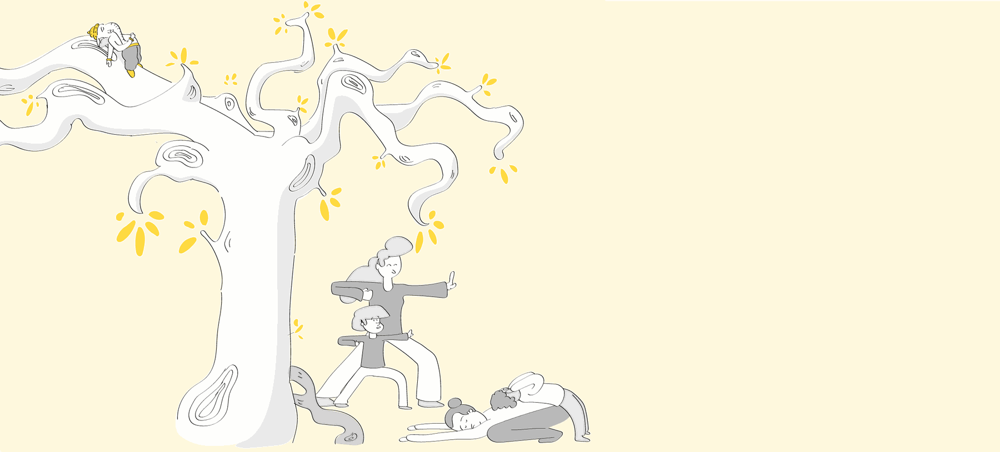

Cours parents / enfants
Ces séances sont l'occasion d'un temps partagé, privilégié, entre un enfant et son parent. Ouvrir un espace inhabituel, en dehors du quotidien, créer une complicité, un moment souvent drôle, ludique tout en permettant à chacun, enfant et adulte, de vivre un moment vrai de présence à lui-même.

Pour les enfants de 7 à 12 ans et leurs parents
Un dimanche par mois
à Au vent dans les branches (nouvelle fenêtre)
17 rue Emmanuel Barthélémy
13600 La Ciotat
à Au vent dans les branches (nouvelle fenêtre)
17 rue Emmanuel Barthélémy
13600 La Ciotat

25 € par binôme
Voir les prochaines dates sur le planning d'Au vent dans les branches (nouvelle fenêtre)